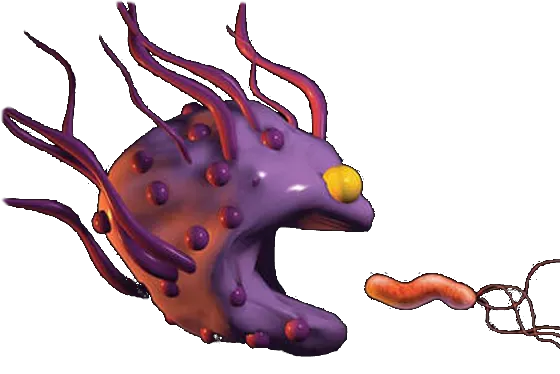

Some lectures are better annotated than others. Anything written in red ink
probably showed up on the exam(s). Chapters 5 and 20 notes are
especially detailed. Please report broken links to: i2i.immuno@gmail.com.
Any missing content was unfortunately eaten by a macrophage.
Know of any cool videos? Please share! ---> i2i.immuno@gmail.com 